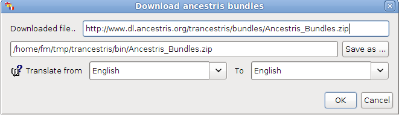

First Steps - I begin with Trancestris
These are the different steps when for the first time you install and start Trancestris.
- If you read this help file, it means you already downloaded and
installed Trancestris. Don't forget to check on the web site for the
latest file available. Even if Trancestris has an automatically
update process, it's good from time to time to download and
install the latest version offered.
- Once downloaded, you have to start Trancestris.
The first screen which appears is the following:

-
Don't change the first line, it's the repository of the bundles
file. The second one is where you want the downloaded file
"Ancestris_Bundles.zip" has to be saved on your computer.
Default is your home directory. Change it for whatever you
want but don't change the name of the file "Ancestris_Bundles.zip",
change just the path if you want. The last line is certainly,
one of the most important ones. You want to translate from
which language, to which language. Here, I have Translate
from English To English. Of course, I don't want to do so,
so, I'm gonna change the second parameter and will choose
for example Norwegian. I'm gonna have: "Translate from English
To Norwegian". Click on "OK".
-
A new window pops up, it's the "Tip of the Day". Read it and
click on "close".

But in the background, Trancestris has downloaded the
Ancestris_Bundles.zip file. Once downloaded a window appears
that will give you the result of the process, it should be
"The file has been downloaded". Click on "OK".

-
New step, very important: you have to configure the settings
to send your translation. So a message pops up which says:
"Information - You must configure the extension before sending
the translated bundle to the Ancestris Team. Go to Tools -
Options -> Send Translation Tab". Click on "OK".

This will open the appropriate config menu window you will
have to configure.
-
Click on "OK" to save your changes.
-
Great, we are ready to begin to translate :-)